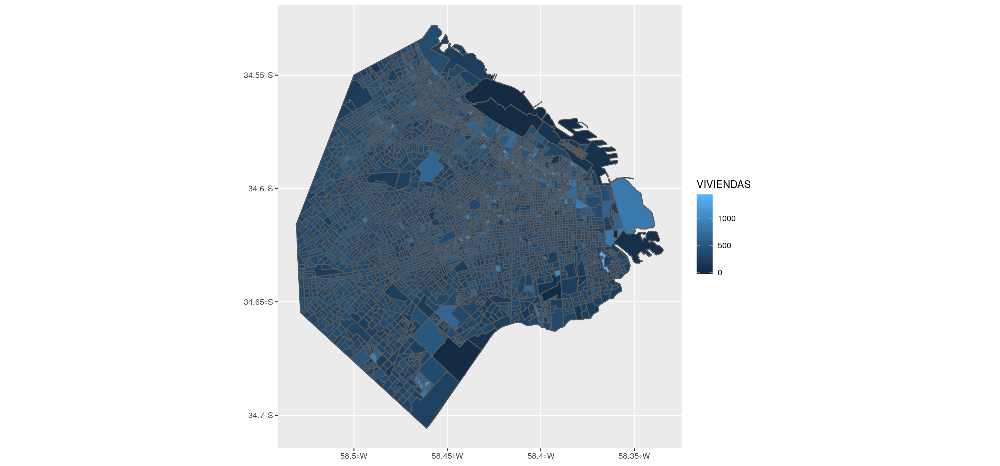

11.2 Práctica Guiada
Cargamos las librerías. En esta ocasión usaremos por primera vez el paquete sf.
11.2.1 Representación de la información en mapas
Trabajaremos con datos del portal de datos abiertos de la Ciudad de Buenos Aires. En este caso, usamos los radios censales de la ciudad y los hemos descargado de https://bitsandbricks.github.io/data/CABA_rc.geojson.
La función st_read nos permite levantar un archivo de tipo .geojson. (también permite cargar otros con capas, pero no lo veremos en esta ocasión).
Vemos que el mismo cuenta con 3.554 features y 8 campos.
epsg (SRID): 4326 y proj4string: +proj=longlat +datum=WGS84 +no_defs refieren a que nuestros datos usan el sistema de coordenadas WGS84, también conocido por su código EPSG 4326 . Es el mismo que usan los sistemas GPS, Google Maps, y las aplicaciones de internet en general.
## Reading layer `CABA_rc' from data source `/home/diego/Documents/0_GIT/2_Ed/intro_ds_bookdown/fuentes/CABA_rc.geojson' using driver `GeoJSON'
## Simple feature collection with 3554 features and 8 fields
## geometry type: MULTIPOLYGON
## dimension: XY
## bbox: xmin: -58.53092 ymin: -34.70574 xmax: -58.33455 ymax: -34.528
## epsg (SRID): 4326
## proj4string: +proj=longlat +datum=WGS84 +no_defsComo los 8 campos son equivalentes a columnas/variables, podemos pedir un summary de la información contenida en radios.
## RADIO_ID BARRIO COMUNA POBLACION
## 1_1_1 : 1 PALERMO : 295 1 : 329 Min. : 0.0
## 1_10_1 : 1 CABALLITO: 215 13 : 305 1st Qu.: 646.2
## 1_10_10: 1 RECOLETA : 198 14 : 295 Median : 786.0
## 1_10_11: 1 BALVANERA: 191 3 : 254 Mean : 813.2
## 1_10_12: 1 FLORES : 183 4 : 252 3rd Qu.: 928.0
## 1_10_13: 1 BELGRANO : 170 7 : 250 Max. :3945.0
## (Other):3548 (Other) :2302 (Other):1869
## VIVIENDAS HOGARES HOGARES_NBI AREA_KM2
## Min. : 0.0 Min. : 0.0 Min. : 0.00 Min. :0.004468
## 1st Qu.: 311.2 1st Qu.: 259.0 1st Qu.: 2.00 1st Qu.:0.018626
## Median : 377.0 Median : 310.0 Median : 6.00 Median :0.035548
## Mean : 401.4 Mean : 323.6 Mean : 19.35 Mean :0.057350
## 3rd Qu.: 462.0 3rd Qu.: 371.0 3rd Qu.: 23.00 3rd Qu.:0.062847
## Max. :1405.0 Max. :1093.0 Max. :403.00 Max. :3.804422
##
## geometry
## MULTIPOLYGON :3554
## epsg:4326 : 0
## +proj=long...: 0
##
##
##
## A la hora de graficar, podemos representar la información utilizando la combinación del famoso ggplot() en conjunto con geom_sf, que identifica la variable con la geometría y la grafica.

Podemos colorear los radios censales de acuerdo a la cantidad de viviendas que hay en cada una de ellas, convocando a la variable en el parámetro de relleno. A su vez, podemos “jugar” con el color y ancho de los bordes.
O bien podemos omitir los bordes.
Tambi√©n podemos usar el campo del relleno para realizar una transformaci√≥n de los datos. Por ejemplo, podemos calcular la densidad de la poblaci√≥n utilizando los datos de POBLACION y AREA_KM2. Aprovechamos para mejorar otras cuestiones est√©ticas üåà
ggplot(data = radios, aes(fill = POBLACION/AREA_KM2)) +
geom_sf(color = NA) +
scale_fill_viridis_c() +
labs(title = "Densidad de población",
subtitle = "Ciudad Autónoma de Buenos Aires",
fill = "hab/km2") +
theme_void()También podemos rellenar de acuerdo a la variable BARRIO, que es una forma de graficar agregados. De todas formas, luego veremos como agruparlos con group_by.
También podemos representar rápidamente la información de alguna de las variables realizando un select() de la misma y la geometría, y pidiendo un plot() (el parámetro lwd define el ancho de las líneas de cada geometría, en este caso, los radios censales). En términos visuales, es como haber agregado por BARRIO la información, no?

11.2.1.1 Agrupando polígonos
Sin embargo, si lo que queremos es reconstruir los polígonos de los barrios, sólo necesitamos hacer un group_by y un summarise, y automáticamente en la columna geometry se crea el polígono combinado. Además, podemos hacer una agregación de las demás variables.
## Observations: 3,554
## Variables: 9
## $ RADIO_ID <fct> 1_1_1, 1_12_1, 1_12_10, 1_12_11, 1_12_2, 1_12_3, 1_1…
## $ BARRIO <fct> RETIRO, SAN NICOLAS, SAN NICOLAS, SAN NICOLAS, SAN N…
## $ COMUNA <fct> 1, 1, 1, 1, 1, 1, 1, 1, 1, 1, 1, 1, 1, 1, 1, 1, 1, 1…
## $ POBLACION <dbl> 336, 341, 296, 528, 229, 723, 393, 600, 472, 786, 32…
## $ VIVIENDAS <dbl> 82, 365, 629, 375, 445, 744, 341, 505, 504, 546, 275…
## $ HOGARES <dbl> 65, 116, 101, 136, 129, 314, 209, 275, 202, 347, 129…
## $ HOGARES_NBI <dbl> 19, 25, 1, 7, 16, 104, 110, 32, 49, 89, 15, 57, 1, 1…
## $ AREA_KM2 <dbl> 1.79899705, 0.01856469, 0.04438025, 0.36634000, 0.01…
## $ geometry <MULTIPOLYGON [°]> MULTIPOLYGON (((-58.37189 -..., MULTIPO…barrios_geo <- radios %>%
group_by(BARRIO) %>%
summarise(POBLACION = sum(POBLACION),
VIVIENDAS = sum(VIVIENDAS),
HOGARES = sum(HOGARES),
HOGARES_NBI = sum(HOGARES_NBI),
AREA_KM2 = sum(AREA_KM2))
glimpse(barrios_geo)## Observations: 48
## Variables: 7
## $ BARRIO <fct> AGRONOMIA, ALMAGRO, BALVANERA, BARRACAS, BELGRANO, B…
## $ POBLACION <dbl> 13912, 131699, 138926, 89452, 126267, 45113, 47306, …
## $ VIVIENDAS <dbl> 6262, 71216, 77981, 33058, 71363, 18133, 21687, 9348…
## $ HOGARES <dbl> 5284, 58327, 60387, 31249, 54666, 16287, 18519, 7518…
## $ HOGARES_NBI <dbl> 70, 3404, 7122, 3850, 542, 3460, 1248, 1656, 785, 10…
## $ AREA_KM2 <dbl> 2.122096, 4.050120, 4.342357, 7.956272, 7.729648, 5.…
## $ geometry <GEOMETRY [°]> POLYGON ((-58.48244 -34.598..., POLYGON ((-…Si pedimos un plot() del objeto, nos devuelve la representación geográfica con los datos de cada una de las variables.

Si deseamos agregar otra capa al gráfico que incluya texto o etiquetas de los datos, contamos con geom_sf_text(), en la cual podemos también solicitar que se etiqueten sólo aquellos datos que cumplen con alguna condición.
ggplot(data = barrios_geo, aes(fill = POBLACION/AREA_KM2)) +
geom_sf(color = NA) +
geom_sf_text(data = barrios_geo %>%
filter(POBLACION/AREA_KM2>25000),
aes(label = BARRIO), size=3)+
theme(legend.position = 'bottom')+
scale_fill_viridis_c(option = 'C') +
labs(title = "Densidad de población",
subtitle = "Ciudad Autónoma de Buenos Aires",
fill = "hab/km2")+
theme_void()11.2.1.2 Volcando en el mapa información de múltiples fuentes: Subtes
Ahora utilizaremos la información de líneas y estaciones de subte. Hemos descargado los .geojson de http://bitsandbricks.github.io/data/subte_lineas.geojson y http://bitsandbricks.github.io/data/subte_estaciones.geojson.
## Reading layer `subte_lineas' from data source `/home/diego/Documents/0_GIT/2_Ed/intro_ds_bookdown/fuentes/subte_lineas.geojson' using driver `GeoJSON'
## Simple feature collection with 80 features and 2 fields
## geometry type: MULTILINESTRING
## dimension: XY
## bbox: xmin: -58.48639 ymin: -34.64331 xmax: -58.36993 ymax: -34.55564
## epsg (SRID): 4326
## proj4string: +proj=longlat +datum=WGS84 +no_defs## Observations: 80
## Variables: 3
## $ ID <int> 1, 2, 3, 4, 5, 6, 7, 8, 9, 10, 11, 12, 13, 14, 15, 16, …
## $ LINEASUB <fct> LINEA D, LINEA D, LINEA D, LINEA D, LINEA D, LINEA D, L…
## $ geometry <MULTILINESTRING [°]> MULTILINESTRING ((-58.45213..., MULTILI…## Reading layer `subte_estaciones' from data source `/home/diego/Documents/0_GIT/2_Ed/intro_ds_bookdown/fuentes/subte_estaciones.geojson' using driver `GeoJSON'
## Simple feature collection with 86 features and 3 fields
## geometry type: POINT
## dimension: XY
## bbox: xmin: -58.48639 ymin: -34.64331 xmax: -58.36993 ymax: -34.55564
## epsg (SRID): 4326
## proj4string: +proj=longlat +datum=WGS84 +no_defs## Observations: 86
## Variables: 4
## $ ID <dbl> 1, 2, 3, 4, 5, 6, 7, 8, 9, 10, 11, 12, 13, 14, 15, 16, …
## $ ESTACION <fct> CASEROS, INCLAN, HUMBERTO 1�, VENEZUELA, ONCE - 30 DE D…
## $ LINEA <fct> H, H, H, H, H, D, D, D, D, D, D, D, C, C, C, C, C, C, C…
## $ geometry <POINT [°]> POINT (-58.39893 -34.63575), POINT (-58.40097 -34…Con geom_sf agregamos diferentes capas de información geográfica:
- los barrios: coloreados según su proporción de hogares con necesidades básicas insatisfechas, sin color de borde.
- las líneas de subte: líneas en amarillo
- las estaciones de subte: puntos en naranja
Alguna reflexión sobre los resultados?
ggplot() +
geom_sf(data = barrios_geo, aes(fill = HOGARES_NBI/HOGARES), color = NA) +
geom_sf(data = subte_lineas, color = "yellow") +
geom_sf(data = subte_estaciones, color = "orange") +
theme(legend.position = 'bottom')+
scale_fill_viridis_c()+
labs(title = "Sistema de transporte subterráneo (SUBTE)",
subtitle = "Ciudad de Buenos Aires")11.2.2 Mapeo de Palos borrachos rosados en Buenos Aires

Ahora utilizaremos información del portal de datos abiertos de la Ciudad de Buenos Aires sobre arbolado. Nos hemos quedado con una selección de dicha base de datos, conservando sólo a los árboles de tipo “palo borracho rosado”.
Notemos que en este caso la información está en formato .rds, es un dataframe donde los ejemplares están georreferenciados con variables long-lat, no hay una geometría como en los casos anteriores.
## # A tibble: 10 x 20
## long lat tipo_sitio id_arbol altura_tot diametro inclinacio
## <dbl> <dbl> <chr> <dbl> <dbl> <dbl> <dbl>
## 1 -58.5 -34.6 Árbol 2.90e7 8 38 0
## 2 -58.4 -34.7 Árbol 3.40e7 8 34 0
## 3 -58.5 -34.6 Árbol 4.01e7 6 42 0
## 4 -58.5 -34.6 Árbol 4.10e6 9 82 0
## 5 -58.5 -34.5 Árbol 2.61e7 10 35 0
## 6 -58.5 -34.7 Árbol 2.19e8 3 8 0
## 7 -58.5 -34.6 Árbol 2.90e7 11 68 0
## 8 -58.4 -34.6 Árbol 1.20e5 4 42 0
## 9 -58.4 -34.6 Árbol 1.26e5 15 39 0
## 10 -58.4 -34.6 Árbol 6.51e4 2 10 0
## # … with 13 more variables: id_especie <dbl>, nombre_fam <chr>,
## # nombre_gen <chr>, nombre_cie <chr>, nombre_com <chr>,
## # tipo_folla <chr>, origen <chr>, codigo_man <chr>, barrio <chr>,
## # comuna <dbl>, calle <chr>, chapa1 <dbl>, chapa2 <dbl>11.2.2.1 Transformación de datos tabulados a datos sf
Para transformar los datos a tipo sf, tenemos la función st_as_sf(), a la cual le indicamos en el parámetro coords las variables que contienen las coordenadas. Con la función st_set_crs() podemos indicar el sistema de coordenadas de referencia.
palos_borrachos <- st_as_sf(palos_borrachos, coords = c('long','lat')) %>%
st_set_crs(4326)
glimpse(palos_borrachos)## Observations: 1,750
## Variables: 19
## $ tipo_sitio <chr> "Árbol", "Árbol", "Árbol", "Árbol", "Árbol", "Árbol",…
## $ id_arbol <dbl> 2836, 3009, 3156, 3615, 3619, 4017, 4018, 4307, 4594,…
## $ altura_tot <dbl> 2, 9, 11, 3, 10, 19, 24, 11, 8, 8, 6, 10, 7, 10, 10, …
## $ diametro <dbl> 4, 60, 40, 10, 23, 75, 75, 50, 35, 70, 34, 65, 45, 60…
## $ inclinacio <dbl> 0, 0, 0, 0, 0, 0, 0, 0, 0, 0, 0, 0, 0, 0, 0, 8, 27, 0…
## $ id_especie <dbl> 25, 25, 25, 25, 25, 25, 25, 25, 25, 25, 25, 25, 25, 2…
## $ nombre_fam <chr> "Bombacáceas", "Bombacáceas", "Bombacáceas", "Bombacá…
## $ nombre_gen <chr> "Ceiba", "Ceiba", "Ceiba", "Ceiba", "Ceiba", "Ceiba",…
## $ nombre_cie <chr> "Ceiba speciosa", "Ceiba speciosa", "Ceiba speciosa",…
## $ nombre_com <chr> "Palo borracho rosado", "Palo borracho rosado", "Palo…
## $ tipo_folla <chr> "Árbol Latifoliado Caducifolio", "Árbol Latifoliado C…
## $ origen <chr> "Nativo/Autóctono", "Nativo/Autóctono", "Nativo/Autóc…
## $ codigo_man <chr> "12-017", "05-008", "11-002", "11-021", "11-021", "11…
## $ barrio <chr> "MONSERRAT", "SAN NICOLAS", "RECOLETA", "RECOLETA", "…
## $ comuna <dbl> 1, 1, 2, 2, 2, 2, 2, 2, 2, 2, 2, 2, 2, 2, 2, 2, 2, 2,…
## $ calle <chr> "Mexico", "Cordoba Av.", "Larrea", "Pacheco De Melo, …
## $ chapa1 <dbl> 1558, 0, 942, 0, 2256, 1614, 1614, 1695, 0, 0, 1815, …
## $ chapa2 <dbl> 0, 0, 0, 0, 0, 0, 0, 0, 0, 0, 0, 0, 0, 0, 0, 0, 0, 0,…
## $ geometry <POINT [°]> POINT (-58.38838 -34.61559), POINT (-58.39205 -…Ahora podemos mapear los palos borrachos en los barrios de CABA que ya estuvimos trabajando!
11.2.2.2 Join espacial
Ahora probemos la forma de unir la información contenida en palos_borrachos con la de barrios_geo. Para eso usamos st_join(), pero… en qué orden deberíamos unirlos?
## Simple feature collection with 10 features and 24 fields
## geometry type: POINT
## dimension: XY
## bbox: xmin: -58.52215 ymin: -34.6865 xmax: -58.37308 ymax: -34.54222
## epsg (SRID): 4326
## proj4string: +proj=longlat +datum=WGS84 +no_defs
## # A tibble: 10 x 25
## tipo_sitio id_arbol altura_tot diametro inclinacio id_especie nombre_fam
## <chr> <dbl> <dbl> <dbl> <dbl> <dbl> <chr>
## 1 Árbol 4.10e7 12 78 0 25 Bombacáce…
## 2 Árbol 1.60e7 10 70 0 25 Bombacáce…
## 3 Árbol 8.41e4 12 60 15 25 Bombacáce…
## 4 Árbol 1.10e8 11 28 0 25 Bombacáce…
## 5 Árbol 1.40e7 10 106 0 25 Bombacáce…
## 6 Árbol 1.70e7 6 36 0 25 Bombacáce…
## 7 Árbol 2.00e7 8 22 0 25 Bombacáce…
## 8 Árbol 1.80e7 7 28 0 25 Bombacáce…
## 9 Árbol 4.00e6 7 22 0 25 Bombacáce…
## 10 Árbol 4.01e7 8 51 10 25 Bombacáce…
## # … with 18 more variables: nombre_gen <chr>, nombre_cie <chr>,
## # nombre_com <chr>, tipo_folla <chr>, origen <chr>, codigo_man <chr>,
## # barrio <chr>, comuna <dbl>, calle <chr>, chapa1 <dbl>, chapa2 <dbl>,
## # geometry <POINT [°]>, BARRIO <fct>, POBLACION <dbl>, VIVIENDAS <dbl>,
## # HOGARES <dbl>, HOGARES_NBI <dbl>, AREA_KM2 <dbl>## Simple feature collection with 10 features and 24 fields
## geometry type: POLYGON
## dimension: XY
## bbox: xmin: -58.52876 ymin: -34.69224 xmax: -58.35054 ymax: -34.54969
## epsg (SRID): 4326
## proj4string: +proj=longlat +datum=WGS84 +no_defs
## # A tibble: 10 x 25
## BARRIO POBLACION VIVIENDAS HOGARES HOGARES_NBI AREA_KM2
## <fct> <dbl> <dbl> <dbl> <dbl> <dbl>
## 1 VILLA… 126374 38915 39848 4150 9.29
## 2 PALER… 226534 141710 103167 2425 16.0
## 3 RETIRO 65413 34363 24147 3104 4.53
## 4 PARQU… 17489 7530 6466 85 1.38
## 5 VILLA… 126374 38915 39848 4150 9.29
## 6 VILLA… 21736 9757 8285 291 1.85
## 7 VILLA… 66521 29002 24035 280 6.37
## 8 PARQU… 17489 7530 6466 85 1.38
## 9 VILLA… 32502 14141 12002 340 2.57
## 10 FLORES 164310 65408 60248 6234 8.59
## # … with 19 more variables: geometry <POLYGON [°]>, tipo_sitio <chr>,
## # id_arbol <dbl>, altura_tot <dbl>, diametro <dbl>, inclinacio <dbl>,
## # id_especie <dbl>, nombre_fam <chr>, nombre_gen <chr>,
## # nombre_cie <chr>, nombre_com <chr>, tipo_folla <chr>, origen <chr>,
## # codigo_man <chr>, barrio <chr>, comuna <dbl>, calle <chr>,
## # chapa1 <dbl>, chapa2 <dbl>Si queremos visualizar la densidad de borrachos por barrio: